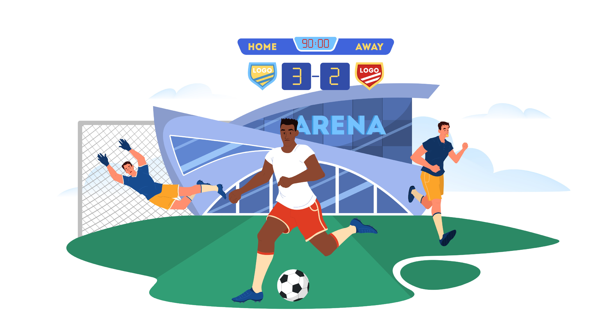

O primeiro Gremista
Como a maioria já sabe, nosso Imortal Tricolor foi idealizado por Cândido Dias Da Silva, natural de Sorocaba, com a mítica história da primeira bola defutebol de Porto Alegre, mas tem algo que você provavelmente não sabe sobre o homem que pode ser chamado de O primeiro Gremista.